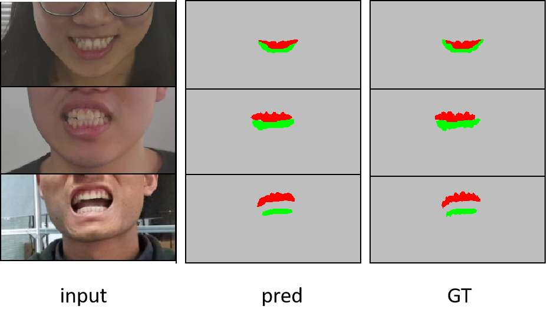

ToothSeg项目总结
项目目标是打造一款牙齿分割器，它可以将一张人脸露齿图分割成共3个类别：上牙，下牙以及其他。

采集露齿微笑的图片作为样本，每个人通过摆出不同嘴型来贡献多个样本。在剔除牙齿比较模糊的图片后，总共得到2000+样本，使用labelme进行标定。
将标定好的数据处理成PascalVOC格式。
按照8:2划分训练集和验证集，基于DeepLabV3+搭建baseline.
输入网络的图片是512*512的。
数据增强：
- 随机翻转
- 随机旋转
- 随机模糊
- 中心随机裁剪
mIoU=0.8638.
修改网络结构：参考fpn的思想，原先的网络只使用了backbone提取的特征图的高层信息和低层信息，我们把中间层的信息也提取出来，自上而下的进行特征融合(插值上采样，求和或拼接)，代码实现在decoder模块中。
mIoU=0.874，有提升。
将交叉熵损失改为Focal Loss，mIoU不升反降，由于调参花费时间会较长，因此不用Focal Loss.
将交叉熵损失改为dice，mIoU=0.8812.
为了使得边缘更平滑，设计了如下方案：
1）制作边缘掩码。具体地，以mask中每个像素点在坐标轴上的位置作为2个特征，以每个像素点取值作为label，制作数据集，并用knn进行拟合。对于第i(i=1,2,…,h*w)个像素点，如果它不是背景类(0)，但是它周围最近的k个像素点中出现了背景类(0)，那么就说明这第i个像素点可能处于边缘位置，于是后续在计算总loss时需要降低该像素点在总loss中所占比重，具体实现方法是给这个像素点设置一个大于1的权重。
2）实现了带边缘像素惩罚的交叉熵损失函数。核心实现部分刚开始用了3个for循环，但速度太慢(15s左右/计算loss)，于是使用了numba加速(0.5s左右/计算loss)，但这又导致不可求导，无法反向传播，最后采用了PyTorch的gather函数进行实现，此时既能反向传播，又能加快速度(0.0000..s/计算loss)。
1 | def my_celoss_element_wise_weighted_numba_accelerate_v2(self,input,target,mask_fill): |
此外，猜想能不能引入mse或者mae，用来衡量mask和预测mask（两者像素取值集合都是{0,1,2}）之间的距离，作为一个辅助的监督，或者结合多种损失（实验表明这样没用）。
实验结果表明，上述方式得到的mIoU强于baseline，但略逊色于直接使用dice损失。
新到一批数据，加入训练集，mIoU有较大提升(0.9041).
项目要求单张图片的前向推理时间不能超过20ms，因此将输入网络的图片resize到256*256，牺牲了一点精度（mIoU=0.8995），使得速度满足要求。
在loss模块添加新的loss: RMI loss 。据论文(Region Mutual Information Loss for Semantic Segmentation)所说，RMI考虑了像素之间的关系，边缘分割效果会更好。
mIoU=0.90125.
尝试了更多损失：Log_Cosh_dice loss，label relaxaing loss，lovasz-softmax loss，以及各种损失之间的加权融合，但都没有提升。
尝试将对抗损失引入模型，具体地，将分割器看作生成器，额外加一个判别器。训练没多久，对于真实mask，判别器很有把握分对类，对于预测mask，预测类别概率是[0.5，0.5]，之后判别器权重基本不再变化，GAN loss不起作用。
将主干网络由于MobileNetV2替换为GhostNet(内嵌SEBlock，引入了通道注意力)，其余条件不变，在之前的完整数据集上进行测试，miou=0.9042，提升明显。
再次测速。使用750张256*256大小的图片，在GTX1070上测试模型的平均单帧推理时间在20ms内，满足要求。
将训练集中的一部分数据拿出来，更换为白色背景，将处理后的图片加入训练集，mIoU=0.918，有提升。
基于最佳模型权重，降低学习率进行微调，mIoU=0.9194.
结项，公司验收，通过。